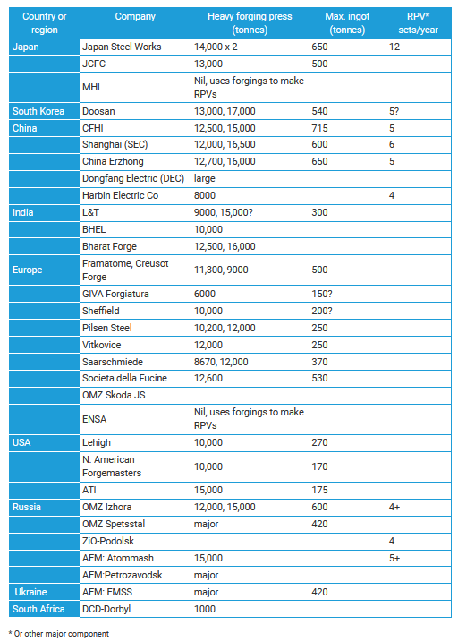
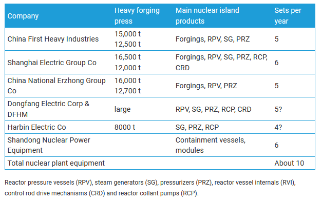

NuclearPlantManufacturing-WNA
Created Wednesday 10 March 2021 (21-03-10_11-24-11)
@2021 @report
WNA (2020). Heavy Manufacturing of Power Plants. https://www.world-nuclear.org/information-library/nuclear-fuel-cycle/nuclear-power-reactors/heavy-manufacturing-of-power-plants.aspx , accessed 10 March 2021.
(Updated October 2020)
- A critical issue for accelerating nuclear power plant construction is the availability of heavy engineering plants to make the reactor components, especially for those units of more than 1100 MWe.
- The supply challenge is not confined to the heavy forgings for reactor pressure vessels, steam turbines and generators, but extends to other engineered components.
- As with other generation technologies, supply constraints plus escalating steel and energy prices flow on to plant costs.
When the first- and second-generation nuclear power plants were built, they mostly came from integrated suppliers such as Westinghouse in each country, who required little from external suppliers. Today most of a new plant comes from a range of international suppliers, and vendor companies such as Westinghouse are focused on design, engineering and project management. There is demand from customers for maximum local supply, which often means a high level of technology transfer. Westinghouse's readiness to transfer the technology for its AP1000 to China was a major factor in its selection.
The supply chain for nuclear power projects has received more attention in recent years, and the World Nuclear Association’s Supply Chain report released in January 2015 documents the situation through to 2030. Over this period it is anticipated that nuclear power plant construction and refurbishment projects for long-term operation could be worth $30 billion per year. Its Reference Scenario envisages the start-up of 266 new reactors by 2030, with an investment of some $1200 billion, and the closure of 118 reactors, mostly in Europe and Japan. The report also looks at decommissioning, which accounts for $95 billion of the latter total. Managing the quality and capability challenges along the supply chain is crucial to securing a reliable and efficient international supplier base. In Europe and North America, capability to manufacture safety-related components and systems has been eroded with the scarcity of new nuclear projects since the 1980s, while in emerging industrial countries vendors must upgrade to meet the stringent requirements expected in the nuclear industry.
For very large Generation III+ reactors, production of the pressure vessel requires, or is best undertaken by, forging presses of about 140-150 MN (14-15,000 tonnes) capacity which accept hot steel ingots of 500-600 tonnes. These are not common, and individual large presses do not have high throughput – about four pressure vessels per year appears to be common at present, fitted in with other work, though the potential is greater than this. Westinghouse was constrained as of 2009 in that the AP1000 pressure vessel closure head and three complex steam generator parts could only be made by JSW. Areva has a little more choice.
Reactor vendors prefer large forgings to be integral, as single products, but it is possible to use split forgings which are welded together. These welds then need checking through the life of the plant. Also, whereas Generation II reactors might require some 2000 tonnes of forgings, EPR and AP1000 units require about twice the amount.
Westinghouse says that the minimum requirement for making the largest AP1000 components is a 15,000 tonne press taking 350 tonne ingots.
The very heavy forging capacity in operation today is in Japan (Japan Steel Works), China (China First Heavy Industries, China Erzhong, SEC), France (Le Creusot), and Russia (OMZ Izhora).
New capacity is being built by JSW and JCFC in Japan, Shanghai Electric Group (SEC) and subsidiaries in China, and in South Korea (Doosan), Czech Rep (Pilsen) and Russia (OMZ Izhora and ZiO-Podolsk).
New capacity is planned in UK (Sheffield Forgemasters) and India (Larsen & Toubro, Bharat Heavy Electricals, Bharat Forge Ltd). In China the Harbin Boiler Co. and SEC subsidiary SENPE are increasing capacity.
Nothing in North America currently approaches these enterprises.* The changed position of the USA is remarkable. In the 1940s it manufactured over 2700 Liberty ships, each 10,800 tonne DWT – possibly pioneering modular construction at that scale (average construction time was 42 days in the shipyard). In the 1970s it had a substantial heavy infrastructure, but today China, Japan, South Korea, India, Europe and Russia are all well ahead of it. Steelmaker ArcelorMittal, based in Luxembourg, now owns the US company which built most US reactor pressure vessels in the 1970s-1980s.
*In the 1970s, requirements were more modest: both US Steel and Bethlehem Steel had 8000 tonne presses and could handle 300 tonne ingots. US forging capacity has not been significantly upgraded since, partly due to lack of integration with steel mills and melt shops to supply the hot steel as 600-tonne ingots.
However, another development is Westinghouse going upstream and setting up factories in USA and China to produce modules for AP1000 reactors. In the USA Global Modular Solutions, a joint venture with Shaw Group, built a large factory in Louisiana, now known as CB&I Lake Charles. In China a similar factory was opened in July 2008 by Shandong Nuclear Power Construction Group, apparently with 64% held by SNPTC and 29% by CNEC.
Suppliers of nuclear equipment must be qualified and quality controlled. The American Society of Mechanical Engineers (ASME) nuclear accreditation known as N-stamp is internationally recognized. N-stamp means that the authorized vendor has produced the commercial nuclear-grade components in accordance with the ASME Boiler and Pressure Vessel Nuclear Codes and Standards. It applies to both design and fabrication of components. RCC-M is another international standard developed in France from ASME N-stamp and used outside the USA for nuclear mechanical and pressure components.
For China, NNSA registration is linked to US NRC standards, though both ASME and RCC codes are used, principally the latter. ISO-9001 is increasingly important. China had six ASME N-stamp accredited manufacturers at the end of 2009, by October 2011 it had 26. These include:
Harbin Power Plant Equipment Corporation (QHD) Heavy Equipment Co., Ltd.
Shenyang Turbo Machinery Co, Ltd.
Dalian DV Valve Co., Ltd.
China First Heavy Industries
Bohai Shipbuilding Heavy Industry Co., Ltd.
Harbin Boiler Co., Ltd.
Harbin Electric Motor Factory, AC/DC Electromotor Limited Liability Company
Shanghai Heavy Machinery Plant Co., Ltd.
Shanghai No.1 Machine Tool Works Ltd.
Shanghai Electric Nuclear Power Equipment Co., Ltd.
Shanghai Valve Factory Co., Ltd.
CNNC SUFA Technology Industry Co., Ltd.
Neway Valve (Suzhou) Co., Ltd
Shandong Nuclear Power Equipment Manufacture Co., Ltd.
Zhejiang Jiuli Special Material Technology Stock Limited Corporation
Dongfang (Guangzhou) Heavy Machinery Co., Ltd.
Dongfang Electric Group Dongfang Boiler Group Co., Ltd.
China Erzhong Group (Deyang) Heavy Industries Co., Ltd.

A further issue emerging with manufacturing is metallurgy. Generation III+ plants can use existing metal alloys, but Generation IV plants operating at higher temperatures will require new materials, which will need a long (e.g. 15-year) lead time to develop. At 700ºC degradation problems are much more severe than at today's operating temperatures.
Large nuclear power plants of 1000 MWe or more usually have low-speed (1500 rpm) turbines, such as GE's Arabelle (developed by Alstom), which are more reliable and efficient. The generators however are heavier than those with the 3000 rpm turbine, and the price is also higher.
Japan
The largest and best-known supplier of heavy forgings is Japan Steel Works (JSW), founded in 1907 by two British companies and a Japanese partner – Hokkaido Steel & Iron Co. It produces large forgings for reactor pressure vessels, steam generators and turbine shafts, and claims 80% of the world market for large forged components for nuclear plants. It has the distinction of supplying the pressure vessels for the first two 1650 MWe Areva EPR plants in Finland and France. It has a 2008 contract with Dongfang Electric Corporation (DEC) to supply forged components including for reactor pressure vessels to Dongfang (Guangzhou) Heavy Machinery Company Limited (DFHM) in China. JSW is contracted to supply Areva with large forged parts until at least 2016. Areva has said that this, along with its own capacity and other partnerships, will secure its supplies of large components for the five to six nuclear plants per year it expects to build in the medium term. Areva has also acquired 1.3% equity in JSW, alongside Hitachi and MHI with 1.36% each. Its main plant is Muroran on Hokkaido in the north, and smaller plants are at Yokohama near Tokyo and Hiroshima in the south.
At JSW's Muroran plant it has 3000 to 14,000 tonne hydraulic forging presses, the latter able to take 600-tonne steel ingots, and a 12,000 tonne pipe-forming press. Its capacity to 2007 had been only four reactor pressure vessels and associated major components per year, but this had been tripled to twelve by early 2011. A JPY 50 billion ($523 million) expansion was completed in March 2010, and a second phase of JPY 30 billion ($314 million) will be complete in 2011. A second 14,000 tonne (oil) hydraulic forging press was commissioned early in 2010, and it can now handle 670-tonne ingots. Muroran also manufactures steam generator components, generator & turbine rotor shafts, clad steel plates and turbine casings for nuclear power plants. However, following the March 2011 Fukushima accident, JSW expected orders to fill only 70% of the expanded capacity, though it later said that it expected JPY 50 billion in new orders over the first year since the accident. These are mainly from France and China, for major nuclear components. JSW's Muroran plant is forging the Arabelle generator rotor for the 1200 MWe VVER Hanhikivi plant in Finland, under contract to Rosatom subsidiary RAOS Project Oy. It will the be sent to the GE Steam Power facility* in Belfort, France, to be machined. The 240-tonne rotor will be 8 metres long and 2 metres wide.
- The Belfort plant was acquired from Alstom by GE in 2015 when GE bought Alstom's power and grid businesses. Under the deal, Alstom and GE formed a 50:50 global nuclear and French steam alliance, and in 2018 Alstom's share in this was transferred to GE.
JSW has been manufacturing forgings for nuclear plant components to US Nuclear Regulatory Commission standards since 1974, and around 130 JSW reactor pressure vessels are in service around the world. The company has said that one of its main targets is to supply nuclear reactor pressure vessels to the Chinese and American markets, and it has advance orders from GE-Hitachi for ABWR and ESBWR components, as well as EPR pressure vessels. Orders have come from China, USA and Europe, as well as Japan.
http://www.jsw.co.jp/en/
The Japan Casting & Forging Corporation (JCFC) was set up in 1970 as a joint venture of Nippon Steel Corp. (founded 1896) and Mitsubishi Steel Manufacturing Co. (founded 1857). It commissioned an 8000 tonne press the following year and has expanded operations since. It commissioned a 13,000 tonne forging press in 2010 and can use 500 tonne ingots to produce large turbine shafts. Castings are up to 300 t. Like JSW, it supplies both MHI and GE Hitachi. It is a private company.
http://www.jcf.co.jp/e
Mitsubishi Power, formerly Mitsubishi Hitachi Power Systems Ltd (MHPS) was established early in 2014, integrating the thermal power generation systems businesses of Mitsubishi Heavy Industries and Hitachi. It is a major manufacturer of steam turbines for nuclear plants, and merged with Babcock-Hitachi KK (BHK) later in 2014. BHK had been set up by Babcock & Wilcox of UK in 1908 as a boiler parts supplier. In 1953 it became a joint venture of Hitachi Ltd with B&W and in 1987 the Hitachi Group took it over. BHK produced reactor pressure vessels, steam generators, containment vessels and other nuclear power equipment, and it supplied 15 pressure vessels for nuclear plants. It was also focused on major components for high temperature gas-cooled reactors and fast breeder reactors. Mitsubishi Power now supplies these major components using forgings from JSW and JCFC, and can produce turbines of up to 1500 MWe. The merged entity claims Qinshan III in China and Shika 1, Hamaoka 4&5 and Kashiwazaki-Kariwa 4 in Japan among its products. MHI owns 65% and Hitachi 35% of Mitsubishi Power.
https://power.mhi.com/company
Mitsubishi Heavy Industries Ltd. (MHI) spent JPY 15 billion ($138 million) to double its capacity to make nuclear reactor pressure vessels and other large nuclear components by 2011. However, it does not have its own forging capacity. Also MHI will triple production space and add processing tools at its factory in Akashi, Hyogo Prefecture. The company aims to reduce the time to make a reactor vessel from three years to two, and to triple annual sales to JPY 600 billion in ten years, from JPY 200 billion in 2007. It supplied the turbine generators for the first four AP1000 units in China, at Sanmen and Haiyang.
MHI had contracts to supply two 1700 MWe APWR nuclear reactors to TXU/Luminant in Texas for Comanche Peak, and also expected orders for about four reactors in Japan. Currently the Kobe shipyard, established in 1905, makes reactor pressure vessels up to 590 tonnes for the APWR. In 2007 it reached a milestone of 50 reactor vessel heads for domestic and overseas nuclear plants and 100 steam generators. In 2009 MHI announced that with Comex Nucleaire it would supply six 300-tonne replacement steam generators for EdF plants in France, to be made at its Kobe shipyard, delivery to begin in 2013. In 2014 it announced consolidation of its casting operations at Futami in Kobe, closing its Hiroshima and Nagasaki casting plants.
https://www.mhi.com/index.
Hitachi-GE Nuclear Energy Ltd, set up in 2007, uses reactor pressure vessels and steam generators for its ABWR units from MHPS, core internals from its Rinkai works, and turbines and generators from MHPS.
http://www.hitachi-hgne.co.jp/en/
IHI Corporation, formerly Ishikawajima-Harima Heavy Industries, is one of Japan's leading heavy machinery manufacturers, with its 19th and 20th century origins in shipbuilding. Its Energy Plant segment provides boilers, gas turbines, nuclear power equipment, BWR pressure vessels and containment vessels, and also oil and gas plants. It held a 3% interest in Westinghouse before selling this in 2017 to Toshiba, with whom it collaborates in making pressure vessels and steam generators for Toshiba and Westinghouse PWR nuclear plants. In 2011 it completed a JPY 2 billion new factory for steam generators at Yokohama. In February 2009 it received an order from Westinghouse for two AP1000 reactor containment vessels for the Vogtle plant in USA. A three-way agreement with Toshiba and Doosan in 2008 makes Doosan's expertise available to IHI.
http://www.ihi.co.jp/
Kobe Steel manufactures forged pressure vessels up to 2000 tonnes, 6.8 m diameter and with 450 mm walls for the oil industry.
http://www.kobelco.co.jp/english/
South Korea
Doosan Heavy Industries & Construction (37% owned by Doosan) has undertaken a major investment in casting and forging capacity. Its large Changwon plant set up in 1976 has a 13,000 tonne press, and a 17,000 tonne forging press came online in 2010. It has contracts from Westinghouse and Shaw to supply reactor pressure vessels and steam generators for four new AP1000 reactors in the USA, as well as two of the four being built in China at Sanmen and Haiyang. Some steam generator and pressure vessel forgings for the two Chinese AP1000s have been subcontracted to China First Heavy Industries. It has supplied heavy reactor components and turbines to KEPCO for four APR-1400 reactors at Barakah in the UAE under a $3.9 billion 2010 contract. It also has a 2008 arrangement with IHI (see Japan section above). To mid-2017 it had supplied 32 reactor pressure vessels of several different kinds (AP1000, APR1400, OPR1000) with two more under construction, and 108 steam generators, with 16 under construction.
http://www.doosanheavy.com/en/
Doosan also has an agreement with China National Nuclear Corporation (CNNC) for supply of heavy forgings and equipment for further projects in China, apparently in the 1000 MWe category.
In 2009 Doosan bought Czech turbine maker Skoda Power, and is setting up Doosan Power Systems (DPS) to oversee Skoda Power and Doosan Babcock as its power solutions business in Europe and the Americas. Skoda's proprietary steam turbine technology completes the suite from reactor steam supply to generators, and positions it for engineering-procurement-construction (EPC) contracts for new nuclear power plants.
KEPCO subsidiary Korea Power Engineering Co. Inc. (KOPEC) was established in 1975 and received ASME N-stamp accreditation in October 2009. It has designed and built 14 nuclear power plants and developed the APR-1400 reactor for which it received an international engineering award. It has also been involved with design work on the Westinghouse AP1000 reactor, and with Bechtel on a US nuclear plant. It was floated as a public company in December 2009. However it is essentially an engineering services company, not a manufacturer.
http://www.kopec.co.kr/
Hyundai Engineering & Construction is involved in the consortium building the four Barakah APR-1400 reactors in UAE. It is also an engineering services company, not a manufacturer.
Daewoo Engineering & Construction was founded in 1973 and is stepping up its efforts to win engineering, procurement and construction (EPC) contracts overseas in the nuclear power plant sector. Daewoo E&C built units 3&4 of Wolsong nuclear plant, and is building units 1&2 of Shin Wolsong, as well as bing involved with Qinshan in China and Lungmen in Taiwan. It teamed up with Korean Atomic Energy Research Institute and won an order from the Jordan Atomic Energy Commission for a research reactor in 2009, and in April 2013 it won a contract with KAERI to design and build a 20 MW research reactor at Gijang. It does not have its own heavy manufacturing plants.
China

China's heavy manufacturing plants can make about ten sets of pressure vessels and steam generators per year, more than doubling from 2007, but this is projected to rise to 20 sets per year with a view to export. The National Development & Reform Commission (NDRC) in 2006 authorized major investment by three major fabricators, all state-owned. However, the UK's Sheffield Forgemasters has been supplying reactor coolant pumps for AP1000 reactors globally.
In mid-2013 the main companies making nuclear island equipment were CFHI, with China National Erzhong Group, and Shanghai Electric Heavy Machinery, while Shanghai Electric, Dongfang Electric and Harbin Electric focused on equipment manufacturing for conventional island. In 2013 the National Nuclear Security Administration approved five private enterprises to obtain nuclear equipment design and manufacturing certificates including Sichuan Huadu, KINWA, Qingdao Lanshi, Wuxi Huaertai and Jiangsu Haishi Pumps.
Early in 2010 the State Nuclear Power Technology Corporation (SNPTC), which is in charge of deployment of new reactor technology, announced that ten engineering enterprises had been qualified to provide equipment for Generation-III nuclear plants. The newly-qualified qualified suppliers are: China First Heavy Industries (CFHI); Harbin Power Equipment (Qinhuangdao) Co; Harbin AC/DC Motor Co; Shanghai Electric Nuclear Power Equipment Co (SENPE); Shanghai First Machine Tool Works; Dongfang (Guangzhou) Heavy Machinery Co Ltd; Deyang Heavy Equipment Co; Dalian Heavy Industry and Crane Co; Taiyuan Heavy Industry Co Ltd; and Shenyang Turbo Machinery Co. Presumably Shandong Nuclear Power Equipment Manufacturing Co. Ltd set up by SNPTC and in which in which it holds a 64% share is additional to these.
China First Heavy Industries (CFHI) – also known as YiZhong – was founded in 1954 in the northern steel-belt Heilongjiang province of Manchuria and is now one of China's key industrial enterprises, still based there. CFHI Heilongjiang Steel Casting and Forging Manufacturing Co., Ltd in Fulaerji, Qiqihar, is a subsidiary. The Nuclear Power and Petro-chemical Business Group on the waterfront in Dalian, Liaoning province, was commissioned in 1997. It is a specialized heavy duty vessel manufacturing facility for nuclear reactor pressure vessels and large heat exchangers as well as petrochemical vessel manufacturing.
While nuclear equipment accounts for only about 5% of CFHI business, it can produce five sets of equipment for large PWRs each year. It produces pressure vessels for nuclear power plants up to 1080 MWe CPR-1000 (e.g. Hongyanhe 1, Yangjiang 1-4, Ningde 3&4, Fuqing 1&2, Fangjiashan 1&2, Qinsahn II-4), steam generators for Yangjiang 1-3 and Ningde 3&4, pressurizers for Qinshan II-4, and pressure vessels for Chasma in Pakistan. It is supplying some steam generator and pressure vessel forgings for China's first two AP1000 units as a subcontractor to Doosan, and is supplying AP1000 pressure vessel and steam generators for Haiyang 1, as well as CGN's first AP1000 units at Dafan/Xianning. It is producing three of the first four reactor pressure vessels for Hualong One units, as well as steam generators.
It commissioned a 15,000 tonne (150 MN) open-die hydraulic press at end of 2006 – then claimed to be the world's largest, and it has also been using a 12,500 tonne (125 MN) press. In 2007 CFHI gained approval from the NDRC to invest CNY 2.3 billion (US$ 337 million) in expanding its production capacity further, doubling its annual production of molten steel and increasing pressed forging capacity to 240,000 tonnes per year. It aimed to have the "world’s largest casting and forging steel base" by 2010, and invested CNY 5 billion to achieve this. In 2009 it poured a 580 tonne ingot for a nuclear plant turbine rotor, and forged this, then in 2013 a 619 tonne ingot was forged into a turbine rotor. It can now handle a 715 tonne ingot.
CFHI Tianjin Heavy Industries Co. Ltd is the third manufacturing base besides the steel casting and forging manufacturing base in Fulaerji and the heavy vessel manufacturing base in Dalian. It will become the largest heavy plant equipment manufacturing base in the world according to CFHI, based on a technical centre owned by CFHI and the only heavy equipment national engineering research centre in the mechanical industry.
In August 2016 CFHI signed a cooperation agreement with China Nuclear Engineering & Construction Group (CNEC) to develop the supply chain for high-temperature gas-cooled reactors (HTRs).
The first set of core equipment for the China Experimental Fast Reactor (CEFR) was designed and manufactured by CFHI and the China Institute of Atomic Energy, representing considerable R&D.
http://www.cfhi.com/en/
The Shanghai Electric Group Company Ltd (SEC), founded in 1925 claims to be the leader in the equipment manufacturing sector. It includes heavy engineering and it manufactures pressure vessels, steam generators and pressurizers for PWRs. At its Minhang base it had a 12,500 tonne forging press by 2005, and added a 16,500 tonne (165 MN) press in 2008. It imported a Japanese heavy forging press in 2008. The largest casting and forging ingot is 600t, the largest casting is 450t and the largest forging is 350t. SEC invested CNY 6 billion in its Minhang and Lingang plants by mid-2009, and over 2009 to 2015 it invested CNY 7.2 billion ($1.17 billion) in its Minhang base.
In 2007 SEC set up Shanghai Electric Heavy Industry Group (SECHIG) as a foundation for development. Based on heavy castings and forgings as its technical support, SECHIG integrates the manufacturing of nuclear island main equipment such as reactor pressure vessels (RPV), steam generators (SG), pressurizers (PRZ), reactor vessel internals (RVI), control rod drive mechanisms (CRDM) and reactor coolant pumps (RCP) within a single group. From 2012 annual capacity is 10 sets of RVI and CDRM for CPR-1000, six sets of RPV & SG for CPR-1000, six sets of half-speed turbine-generators for Generation III PWRs, 12 RCP and 50 sets of Class 2&3 pumps. It has delivered RPV for AP1000, and SG for AP1000, EPR and CAP1400. SEC has a joint venture with Siemens for turbine generator equipment.
A major SEC subsidiary is Shanghai Electric Nuclear Power Equipment Co Ltd (SENPE) with a new nuclear fabrication plant at Lingang. This is increasing ingot capacity to 600 tonnes, allowing fabrication of both AP1000 and EPR components. A CNY 1 billion second phase of this Lingang plant came on stream in 2012, almost doubling capacity. SENPE said that Lingang would become the world's largest and most concentrated base for nuclear equipment from 2012. In 2009 SENPE could make 2.5 sets of PWR equipment per year including pressure vessels and steam generators. SEC is using the Hainan project to localize reactor coolant pump (RCP) manufacture and plans to develop a Generation III RCP with KSB, then a prototype for the CAP1400 by 2015.
SEC supplied pressure vessel and steam generators for Qinshan II-1 CNP-600 and has contracts for pressure vessels and steam generators for Haiyang 2 and Taohuajiang AP1000s, Changjiang CNP-600, and Ningde 2 CPR-1000. It also has contracts for 24 CPR-1000 steam generators, including Qinshan II-4, Hongyanhe 1, Ningde 2, and Fangjiashan 2. It is supplying two of the steam generators for the Taishan 2 EPR. It will also supply major components for the Shandong HTR. In March 2015 Areva subcontracted the manufacture of six steam generators for South Africa’s Koeberg plant to SENPE.
Another important SEC subsidiary, Shanghai First Machine Tool Co. is the only domestic supplier of reactor vessel internals and control rod drive mechanisms, with capacity increasing to six sets per year in 2010 and then ten sets per year. It has an 85% market share (100% for CPR-1000 reactors). It supplied reactor internals for Hualong One reactors at Fuqing and Karachi. Other SEC subsidiaries are Shanghai Heavy Machinery Company, specializing in forging and casting, and Shanghai Boiler Co Ltd.
http://www.shanghai-electric.com/Pages/Index.aspx#
In 2011 France's Alstom signed an agreement with SEC to set up Alstom-Shanghai Electric Boilers as a 50-50 joint venture to make boilers for all kinds of power plants. Alstom already had a 51% share in Wuhan Boiler, which invested CNY 900 million in a new plant in 2009, making it Alstom's largest boiler factory. Alstom also cooperates with Dongfang Electric (DEC).
China National Erzhong Group Co Ltd (CNEG, otherwise China Second Heavy Industries Corp) is located inland at Deyang, in Sichuan province. It started production in 1971 and claims to be the largest heavy machine-building enterprise in China, with assets of CNY 18.8 billion and a strong R&D capability in Chengdu. China Erzhong can produce 650-tonne ingots and has a 125 MN (12,700 tonne) hydraulic press and added a 160 MN (16,300 tonne) press in 2009. It can machine 500t castings and 250t forgings. In 2009 it forged China's biggest low-speed 1100 MW generator rotor for Dongfang Electric, which was successfully tested under Alstom supervision. In 2014 it forged a 600t rotor shaft for Fuqing 6. It also has the world's largest hydraulic press, an 80,000-tonne open die forging press costing CNY 1.5 billion, commissioned in 2010, for manufacturing large components. In April 2013 CNEG was cleared to start manufacturing forgings for CAP1400 pressurisers designed by Dongfang (DFHM).
Erzhong Group (Zhenjiang) Heavy Equipment Ltd is located at Zhenjiang City, Jiangsu Province, 85 km east of Nanjing on the Yangtze River Delta, and is the second major production base for China Erzhong, including a foundry and forge.
China Erzhong supplies forgings to Dongfang (Guangzhou) Heavy Machinery Co's (DFHM) plant near the coast. China Erzhong also plans to invest CNY 2.4 billion in setting up another production base in the Jiangsu province for large-sized forging products. China Erzhong won the contract to supply reactor pressure vessel forgings and primary piping for the deferred Taohuajiang AP1000 reactors.
Erzhong Group (Deyang) Heavy Equipment Ltd has a smaller production base and has major pipe contract with State Nuclear Power Engineering Corporation for AP1000 units at Sanmen and Haiyang. The main pipe connecting pressure vessel and steam generators is the only key equipment on the nuclear island of the initial AP1000 reactors that China will manufacture domestically.
China Dongfang Electric Corporation (DEC) is based inland at Chengdu, Sichuan province, and claims to be the largest power generation equipment manufacturer in the world. The group has several subsidiaries and was founded in 1984. DEC is listed in Hong Kong and Shanghai, and in April 2009 announced a CNY 5 billion capital raising. Dongfang has the largest market share for turbine generators, and was the main contractor for Qinshan II. It produces everything from reactor pressure vessels and steam generators through to turbine generators. DEC works closely with Erzhong, and also has a link with Babcock-Hitachi.
DEC is providing the reactor pressure vessels for Taishan 2 EPR and Ningde 1, and its steam generators will equip Taishan 2, Hongyanhe 1-4, Ningde 1, Fuqing 1-2 and Fangjiashan 1-2 projects, as well as the first four Hualong One units at Fuqing and Fangchengang. In 2005, DEC supplied the main equipment for nuclear island and conventional island of Ling Ao Phase II, with half-speed Arabelle turbine generator resulting from technical cooperation with Alstom.
http://www.dongfang.com.cn/
Dongfang Electric Machinery Co Ltd (DFEM) is based at Deyang in Sichuan and is a major researcher and manufacturer of power generating equipment with major machining capability. It makes 150 MWe turbine generators for CPR-1000 reactors (e.g. Ling Ao), 1250 MWe ones for AP1000 and 1750 ones for EPR. Steam turbine generators are a major export. It was established in 2008, but originates from the Dongfang Electrical Machinery Works set up in 1958. Annual output is up to 38 GWe of equipment.
http://en.dfem.com.cn/
Alstom had an agreement with DEC for Arabelle turbine and generator packages for all future AP1000 projects, and many more. DEC is supplying Arabelle turbine generators for Taishan 2, Ningde, Fuqing, Fangjiashan, Tianwan 5&6, and apparently for Tianwan 3&4. In December 2012 SNPTC signed a contract for DEC to undertake R&D, design and produce the turbine generator for the CAP1400 power plant, along with the steam separators.
A major DEC subsidiary is Dongfang (Guangzhou) Heavy Machinery Co (DFHM) at Nansha near the coast in Guangdong, which has the capacity to produce three sets of CPR-1000 forged equipment per year since 2010 as well as four sets of turbine generators. DFHM was formerly known as Guangzhou Guangzhong (Nansha) Machinery Co Ltd, and it has a close relationship with CGN and worked with Areva to manufacture all heavy nuclear components for Ling Ao Phase II and other CGN projects. It supplied the first Chinese-made 1000 MWe reactor pressure vessel (for Ling Ao) in June 2009. (It was branded Areva and DEC.) It has ASME N-stamp accreditation for boilers and pressure vessels. DFHM was established in 2004 by Dongfang Electric (now 57%) and China Erzhong, with several local investors. It has had a close relationship with Japan Steel Works since 2006, and under a 2008 contract with JSW imports large forged components for pressure vessels and steam generators from JSW.
Another subsidiary, the Dongfang Boiler Group Co Ltd, manufactures large capacity power plant boilers including components of PWRs. Dongfang Turbine Co is another subsidiary.
A 2006 DEC joint venture, Areva Dongfang Nuclear Pump Co, produces reactor coolant pumps, for Ling Ao Phase II and Ningde, and at end of 2013 had a capacity of 12 per year.
Harbin Electric Company Ltd (HEC – formerly Harbin Power Equipment Co Ltd, HPEC) is one of the four major heavy manufacturers in China. It provided ancillary equipment for the 1200 MWe steam turbines and generators for the four Sanmen and Haiyang AP1000 units under licence from Mitsubishi Heavy Industries (MHI), which supplied the actual turbine generators. HEC is also supplying primary coolant pumps for CNNC’s Fuqing 5&6.
http://www.hbc.com.cn/
HEC subsidiary, the Harbin Boiler Co. (formerly Harbin Boiler Works) founded in 1954 is the largest utility boiler manufacturer in the country and is supplying steam generators for China's AP1000 reactors at Sanmen 2 and CPR-1000s at Yangjiang 4. It is supplying pressurizers for Yangjiang 1-4 and Ningde 3&4. It bid for AP1000 pressure vessels. It has been producing steam generators for plants up to 600 MWe and has supplied 600 utility boilers with a total capacity of over 53,000 MW, covering one-third of the total installed capacity of thermal units manufactured domestically in more than 180 power plants in 29 Chinese provinces, municipalities and autonomous regions, plus exports to 23 countries. It has an 8000 tonne press.
Shandong Nuclear Power Equipment Manufacturing Co Ltd (SNPEMC) was set up in 2007 by the State Nuclear Power Technology Corporation (SNPTC) which now holds a 80.36% share. China Nuclear Industry No.23 Construction Company (CNI 23) holds 16%, and another subsidiary of CNNC holds the remainder. SNPEMC, also known as National Nuclear Equipment, designs and manufactures AP1000 reactor components, containment vessels and equipment. It is responsible for the fabrication of equipment modules, structural modules, primary pipelines and equipment for conventional island, as well as fabrication of equipment for other nuclear power plants. In 2008 a new factory was commissioned to produce structural, piping and equipment modules for Westinghouse's AP1000 reactors. Shandong Nuclear Power Construction Group built that facility in just 11 months in Haiyang County Lingang Industrial Zone. SNPEMC has the capacity to build containment vessels and other equipment for two AP1000s each year, and has gained ASME N-stamp accreditation. It is providing the vessel head for unit 2 at Sanmen. At Sanmen, the first module from Shandong lifted into place weighed 840 tonnes. A further 18 modules used in the reactors' construction weigh in excess of 500 tonnes. In November 2009 SNPEMC signed an agreement with Harbin Turbine Co to manufacture AP1000 components.
Also in Shandong, CITIC Heavy Industries Co Ltd set up a nuclear forging plant in 2010, but the scale of this is not known.
Xi’an Nuclear Equipment is a CNNC subsidiary located in Shaanxi province and specialises in pressurizer, safety injection tank and related nuclear island equipment. It is certified as one of the nation’s nuclear pressure equipment suppliers and has participated in the Qinshan I project, Pakistan’s Chashma and Qinshan II extension project. It is supplying pressurizers for Qinshan II-3, Fangjiashan 1-2 and Fuqing 1-2.
Chong Ming Nuclear Power and Heavy Container Forging Manufacture Project is being built at Qingdao in Shandong province. Chong Ming Energy Ltd is investing CNY 3 billion to produce heavy forgings for power generation equipment, heavy chemical industry and shipbuilding. Some 80,000 tons of heavy forgings would be produced annually from late 2012.
Japan's Morimatsu Group, which has diverse engineering operations in China, established the Shanghai Morimatsu Pressure Vessel Co in Pudong in 1990, to manufacture locally for Chinese nuclear power projects. It has ASME N-stamp accreditation.
http://www.morimatsu.jp/english/group/
India
In India, Larsen & Toubro Ltd., the country's biggest engineering and construction company, makes reactor pressure vessels for the country's PHWRs and fast breeder reactor, and steam generators. It has a 9000 tonne open die press which can take 300-tonne ingots and plans 15,000 tonne capacity for ultra-large forgings, and holds ASME N-stamp accreditation. It has been involved in supply of equipment, systems and services for nearly all the PHWR reactors that have been indigenously built, including manufacture of calandrias, end-shields, steam generators, primary heat transport system and heat exchangers. In September 2009 it secured an order for four steam generators for Rajasthan 7 & 8, having supplied similar ones for Kakrapar 3&4.
Larsen & Toubro (L&T) plans to form a 20 billion rupee ($463 million) joint venture with state-run Nuclear Power Corp. of India (NPCIL) to build a new plant for domestic and export nuclear forgings at its Hazira, Surat site in Gujarat state by 2011. NPCIL will hold a 26% stake. The plant will handle 600-tonne ingots and have a very large forging press to supply finished forgings for nuclear reactors, pressurizers and steam generators, and also heavy forgings for critical equipment in the hydrocarbon sector and for thermal power plants. According to Government officials, discussions are under way with French firms for industrial cooperation in the manufacture of PWR equipment in India. This would be to enhance the competitiveness of French reactors worldwide.
Early in 2009, L&T signed four agreements with foreign nuclear power reactor vendors. The first, with Westinghouse, sets up L&T to produce component modules for the Westinghouse AP1000 reactor. It said that this would enable the two companies "to utilize indigenous capabilities for the turnkey construction of nuclear power plants including supply of reactor equipment and systems, valves, electrical & instrumentation products and fabrication of structural, piping and equipment modules for Westinghouse AP1000 plants." The second agreement was with Atomic Energy of Canada Ltd (AECL) "to develop a competitive cost/scope model for the ACR-1000." In April L&T signed an agreement with Atomstroyexport primarily focused on components for the next four VVER reactors at Kudankulam, but extending beyond that to other Russian VVER plants in India and internationally. Then in May it signed an agreement with GE Hitachi to produce major components for ABWRs - the two companies hope to utilize indigenous Indian capabilities for the complete construction of nuclear power plants including the supply of reactor equipment and systems, valves, electrical and instrumentation products for ABWR plants to be built in India. In 2015 Westinghouse said that L&T was equipped to produce reactor pressure vessels and other major components for AP1000 reactors.
http://www.larsentoubro.com
Following the 2008 removal of trade restrictions, Indian companies led by Reliance Power (RPower), NPCIL and Bharat Heavy Electricals (BHEL) plan to invest over US$ 50 billion in the next five years to expand their manufacturing base in the nuclear energy sector.
State-owned Bharat Heavy Electricals (BHEL) (BHEL) claims to be the largest engineering and manufacturing enterprise in India in the energy-related infrastructure sector, and has provided some 80% of the heavy equipment for India's indigenous nuclear power program. It is supplying the steam generators for the first 700 MWe series of reactors, at Kakrapar, based on its design for the 540 MWe units. It is in the process of doubling its production capacity over four years from 10,000 MWe of plant per year (Dec '07), and planned to spend $7.5 billion in two years building plants to supply components for reactor units of 1,600 MWe. It also planned to set up a 50-50 venture with NPCIL that will supply components for nuclear plants of 700 MWe, 1,000 MWe and 1,600 MWe. It is planning to install a 10,000 tonne forging press. It is also setting up an office in Shanghai in 2009 to source castings and forgings.
BHEL has set up a joint venture with NPCIL to supply turbines for nuclear plants of 700 MWe, 1,000 MWe and 1,600 MWe and to seek overseas partners to provide technology for this enterprise. In July it announced that it was close to finalising a European partner to take 30-35% of this joint venture.
BHEL in 2008 set up a joint venture with Heavy Engineering Corp (HEC) for making castings and forgings for nuclear power plants, based on upgrading HEC's plant. BHEL was planning to set up a greenfield manufacturing base in India for nuclear forgings and was in talks with UK-based Sheffield Forgemasters International Ltd and Japan's Kobe Steel for possible joint ventures in nuclear forgings. Then in March 2009 BHEL said it was likely to join the Areva-Bharat Forge joint venture to produce nuclear castings and forgings, instead of going it alone, this intention being confirmed in July. Shortly after, it announced a ten-year technology transfer agreement with Sheffield Forgemasters for large power plant components. Another joint venture is with NPCIL and a foreign partner to make steam generators for 1000-1600 MWe plants.
http://www.bhel.com
Bharat Forge Ltd (BFL) is a multinational company which claims to be among the largest and technologically most advanced manufacturers of forged and machined components, mostly for the automotive industry. It is said to be the world's second-largest forging company and is extending its activities into the power sector. In 2008 it formed a joint venture with Alstom primarily for manufacturing state-of-the-art supercritical power plant equipment in India, though the enterprise may extend to nuclear applications. In January 2009 it signed a memorandum of understanding with Areva to set up a joint venture in casting and forging nuclear components for both export and the domestic market, by 2012.
BFL has 12 forging presses ranging from 1600 to 16,000 tonnes. Its Mundhwa plant is the world’s largest forging facility with an annual capacity of 300,000 tonnes. BFL is part of the Kalyani Group – a US$ 2.4 billion conglomerate.
http://www.bharatforge.com/
HCC (Hindustan Construction Co.) has built more than half of India's nuclear power capacity, notably all 6 phases of the Rajasthan Atomic Power Project and also Kudankulam. It specializes in pre-stressed containment structures for reactor buildings. In September 2009 it formed a joint venture with UK-based engineering and project management firm AMEC PLC to undertake consulting services and nuclear power plant construction. HCC has an order backlog worth 10.5 billion rupees ($220 million) for nuclear projects from NPCIL and expects six nuclear reactors to be tendered by the end of 2010.
http://www.hccindia.com/
Mumbai-based Walchandnagar Industries Ltd (WIL) is an engineering and project management company which aims to build a factory in Gujarat in joint venture with Atomenergomash OJSC in line with a 2010 agreement to build nuclear power equipment for both Indian and export markets. If this does not proceed, it is open to a joint venture with Westinghouse or EDF.
www.walchand.com
National Thermal Power Corporation (NTPC) plans to diversify into nuclear power, and has formed joint ventures in heavy engineering with BHEL and Bharat Forge. It is also creating a joint venture with NPCIL and BHEL to sell 220 MWe PHWR units abroad.
Europe
Creusot Forge is a Framatome subsidiary located in the Le Creusot basin in Burgundy, central France, with four production facilities. It claims a strategic position in Europe for fabrication of very heavy mechanical components (up to 500 tonnes in one piece), including reactor pressure vessels and steam generators. It has an 11,300 tonne hydraulic forging press and a 9000 tonne one commissioned in mid-2014. The new press, coupled with a 200-tonne manipulator, allows for the forging of steel, alloy and superalloy ingots weighing between 15 and 260 tonnes. In 2006 the integration of SFARsteel boosted its capability to supply new generation reactors, and in particular the EPR. The nozzle shell ring for the EPR requires capacity to forge a 500 tonne ingot and formerly only JSW could do this.
Creusot Forge's Chalon St. Marcel facility, part of the Burgundy Nuclear Partnership grouping, assembles forged and cast components. Since 1975 it has produced steam generators and pressure vessels up to 500 tonnes for all the French power reactors as well as exports – some 76 original pressure vessels and vessel heads, 74 replacement heads, 330 original steam generators and over 86 replacement steam generators (to mid-2015). It supplied the original steam generators for Olkiluoto 3 and Taishan 1 EPRs, and Prairie Island in the USA (in 2013). In April 2009 Areva announced that it planned to almost double the capacity of the plant for heavy components, from 1.7 to 2.7 EPR sets of equipment per year.
Areva’s Creusot Mécanique, also at Le Creusot, carries out precision finish machining on large components including stainless parts of the heavy reflector for the EPR reactor pressure vessel internals.
The UK's Sheffield Forgemasters International, founded in the 1750s and subject to a management buyout in 2005, is the only UK company with ASME N-stamp accreditation. It has a 10,000 tonne press which takes 300 tonne ingots, and had finalised £170 million financing to install a 15,000 tonne forging press to handle 500 tonne ingots. After long negotiation, the UK government agreed to lend £80 million, Westinghouse offered about £50 million in advance payments, and the last £20 million came from bank loans. The press was expected to be commissioned in 2013, and would have enabled the company to manufacture all heavy components for EPR and AP1000 reactors, but the new UK government in June 2010 cancelled the loan arrangement and the prospect is now uncertain. In February 2016 the company said that while it could not produce ultra large forgings for the EPR, it could “produce 80% of forgings for projects like Hinkley Point C, including large forgings for the steam generator, reactor and pressuriser assemblies.”
Sheffield Forgemasters also makes casings for high pressure reactor coolant pumps, capable of pumping water at up to 430,000 litres per minute of coolant through a reactor core. In 2008 the company won a contract to supply 16-tonne stainless steel casings for the Westinghouse AP1000 reactors at Sanmen nuclear power plant in China and for two states in USA. it also supplies reactor coolant pump casings for Korea's APR-1400 reactors, via KSB in Germany. It has also produced heavy forgings for UK nuclear power plants. In 2008 it signed an agreement with China's Harbin Electric Co. (HEC) to produce a range of large-scale complex engineering products for civil nuclear, steam and hydro power plants in China. In 2009 it won contracts for Argentina (Embalse), and entered a ten-year £30 million technology transfer agreement with Bharat Heavy Electricals (BHEL) for large power plant components.
http://www.sheffieldforgemasters.com/
In 2010 Cammell Laird, a UK shipbuilder, and Nuvia, with many years nuclear experience, formed a partnership to bid for construction of nuclear power plant modules. In 2017 it opened a new factory at Birkenhead near Liverpool with a construction hall for assembly of large-scale complex equipment including nuclear power plant modules. The new factory is part of the UK’s Nuclear Advanced Manufacturing Research Centre (NAMRC), a collaboration of academic and industrial partners from across the civil nuclear manufacturing supply chain, established in 2012.
http://www.clbh.co.uk/civil-nuclear http://www.nuvia.co.uk/ http://www.namrc.co.uk/
Saarschmiede at Voelklingen, Saarland, commissioned a 120 MN (12,000 tonne) open die forging press in May 2010, capable of taking 370 tonne ingots at up to 1290ºC. It produces turbine and generator shafts, and with the new press will be capable of forging all AP1000 components. Saarschmiede aims to be one of the top three forges worldwide, focused on power generation components.
http://www.saarschmiede.com/ssf/de/index.shtml
Spain's Equipos Nucleares SA (ENSA), based in Madrid, provides a lot of heavy equipment for Westinghouse plants. In April 2009 GE Hitachi signed a strategic agreement for ENSA to manufacture and supply reactor pressure vessels for new GE Hitachi-designed ESBWR and ABWR units. In February 2009, Japan Steel Works (JSW) supplied the first of six forgings required to fabricate one ESBWR reactor pressure vessel, and ENSA anticipated completing the manufacturing process by mid-2012. It produces reactor pressure vessels, steam generators and other components at its factory on the north coast of Spain for nuclear power plants in several countries, including the USA, China, South Korea, South Africa, France and Sweden. It is providing steam generators to Shanghai Electric (SENPE) for Sanmen 2 AP1000 in China. ENSA exports 85% of its production.
http://www.ensa.es/
In Italy, Ansaldo Nucleare was set up in 1989 as a subsidiary of Finmeccanica Group under Ansaldo Energia. It is based in Genova and specializes in the design, construction and servicing of nuclear power plants. It has played a major role in building Romania's Cernavoda 2 reactor.
https://www.ansaldoenergia.com/ansaldo-nucleare/home
Italy’s Società delle Fucine (SdF) established in 1884 at its Terni plant makes large forged components for power plants, including nuclear reactors, notably rotor forgings. It can produce almost all the components for reactors such as EPR and AP1000. It has an ingot capacity up 530 tonnes (450t hollow ingot), a 12,600 tonne and a 5000 tonne hydraulic forging press, as well as electric arc steel furnaces up to 180 tonne capacity. Since 1999 it has been a subsidiary of ThyssenKrupp AG.
www.fucineterni.it
Italy's SAFAS is a steel foundry which produces castings up to 32 tonnes, including reactor cooling pump casings for Areva's EPR projects (Olkiluoto, Flamanville, Taishan 1-2), Lingao 3-4 and other CPR-1000 units in China, and Changjiang CNP-600 units.
http://www.safas.it
Italy’s GIVA Forgiatura A Vienna plant near Milan installed a very large open die press in 2014 for forging turbine wheels from nickel-based alloys. GIVA already had open die forging capacity of 34 to 59 MN and using ingots of 200 t.
www.forgevienna.it
The major Czech nuclear engineering company Skoda JS, at Plzen, was taken over by Russia's OMZ Group in 2004. Since 1980 Skoda JS has manufactured 24 sets of complete VVER reactors including reactor pressure vessels, internals, control rod drive mechanisms etc. for plants such as Temelin and Mochovce. Steam generators were procured from Vitkovice. In 2005 Areva placed an order with Skoda JS to supply EPR reactor internal parts for the Finnish Olkiluoto 3 plant and in 2009 similarly for China's Taishan 1 plant.
www.skoda-js.cz/en
Pilsen Steel (formerly Skoda Steel) is a sister company to Skoda JS, also at Plzen, and undertakes heavy forging. It has a 100 MN (10,200 tonne) forging press and can produce 200 tonne ingots in its foundry. In 20010 it will upgrade the press to 12,000 tonnes. It claims a long tradition in nuclear manufacturing and has supplied forged parts for 24 VVER pressure vessels (440 and 1000 MWe) as well as seam generators. With Skoda JS, it has been an OMZ subsidiary since 2004, and expects to get ASME and RCC-M accreditation in 2010 as well as Chinese NNSA registration.
www.pilsensteel.cz/en/?m=100&lx=en
Skoda Praha in Prague is owned by CEZ and is an engineering company involved with secondary circuits and coal-fired plants, as well as maintenance and modernization of VVER nuclear plants. It upgraded CEZ’s four Dukovany units, resulting in a 5% increase in capacity. In March 2016 Skoda Praha signed an agreement with China General Nuclear (CGN) subsidiary China Nuclear Power Engineering Co (CNPEC) to help it obtain design approval for Generation III reactors from European regulators.
www.skodapraha.cz/en/
The Czech Vitkovice Group said in 2007 that its heavy machinery division could upgrade facilities to produce heavy nuclear forgings in two years. It already produces pressure vessels and steam generators for nuclear plants using a 12,000 tonne forging press.
http://www.vitkovice.cz/en/
In 2015 the Czech Energy Alliance was formed by 14 companies, to be headed by engineering company Skoda Praha, a subsidiary of CEZ, and including Skoda JS and Vitkovice. In March 2016 it signed and agreement with CGN with a view to Czech companies becoming subcontractors for Chinese reactor projects in third countries.
A separate Czech company, Skoda Power, produces steam turbines, heat exchangers and other heavy equipment, and was taken over by Doosan in 2009.
www.doosanskodapower.com
Russia
Russia's main reactor component supplier has been OMZ's Izhorskiye Zavody facility at Izhora. Rosatom set up Atomenergomash (AEM) in 2006 as a holding company, part of Atomenergoprom, to gain control of the supply chain for new plants. It has taken steps to diversify its source of supply from OMZ.
Nevertheless, in May 2012 Rosenergoatom said that reactor pressure vessels for its VVER-TOI reactors would be made by both OMZ’s Izhorskiye Zavody and AEM’s Energomashspetsstal (EMSS) in Ukraine, with AEM’s Petrozavodskmash. EMSS would supply forged components to the Petrozavodskmash and Atommash plants.
Izhorskiye Zavody, founded in 1722, has manufactured about 60 sets of equipment for VVER reactors in Russia and eight other countries. Its output includes reactor pressure vessels, steam generator shells, reactor internals, and heavy piping. It expected to produce the forgings for all new domestic AES-2006 model VVER-1200 nuclear reactors (four per year from 2016), plus exports. Izhora manufactured components for the Leningrad II and Novovoronezh II VVER-1200 units, for Tianwan 3&4 VVER-1000s, the Rostov 3&4 pressure vessels (also intended for Baltic 2 and Belene), and the reactor pressure vessel for Kudankulam 3 VVER-1000 in India. It supplied the main circulator pumps for Tianwan 4.
In 2008 the company rebuilt its 12,000-tonne hydraulic press, claimed to be the largest in Europe, and a second stage of work increased that capacity to 15,000 tonnes. In mid-2009 Izhora commissioned a furnace complex enabling production of 600-tonne ingots and 5.5 metre diameter forging shells for nuclear reactors. It doubled the production of large forgings from 2011 as part of its expansion to produce four sets of nuclear reactor components per year. The 600-tonne ingot capacity will also enable production of large rotors for low-speed turbines.
http://www.omz-izhora.ru/
OMZ-Spetsstal at St Petersburg has a five-year licence from the Federal Environmental, Industrial and Nuclear Supervision Service of Russia (Rostechnadzor), for the manufacture of equipment for nuclear power plants. It supplies to Izhorskiye Zavody facility at Izhora. In 2013 it produced a 420-tonne forging for a VVER-TOI prototype reactor pressure vessel – up from 360t previous capacity. In 2016 it completed the pressure vessel forgings for Kudankulam 3.
http://omz-specialsteel.com/
OMZ Uralhimmash has produced components for many Russian nuclear power plants, including Beloyarsk BN-600, as well as major equipment for the petrochemical industry.
www.ekb.ru
Parent company Objedinennye Mashinostroitelnye Zavody (OMZ – Uralmash-Izhora Group, or United Heavy Machinery Plants) itself is the largest heavy industry company in Russia, and has a wide shareholding but is controlled by Gazprom. OMZ was founded in 1996 as the Ural Heavy Machinery Works. It specializes in engineering, production, sales and maintenance of equipment and machines for the nuclear power, oil and gas, and mining industries, and also in the production of special steels and equipment for other industries. Izhorskiye Zavody became part of the company in 1999, and Skoda Steel (incorporating forging and foundry sections) and Skoda JS joined in 2004. Skoda Steel was renamed Pilsen Steel in 2007. See Europe section for these.
http://www.omz.ru/en/
Atomenergomash (AEM) under Rosatom now claims to be the leading company in Russia for major components of nuclear power plants, controlling over 40 facilities, and to be the sole Russian source of steam generators and primary coolant pumps for nuclear plants. It has two design bureaus: OKB Gidropress for VVER reactors, and OKBM Afrikantov for fast neutron (BN) and naval/ marine reactors. At the end of 2018 its order book stood at RUR 133 billion.
http://www.aem-group.ru/en/
AEM-Technology CJSC was established in 2007 as a private joint stock company based in St Petersburg and is the main AEM entity for manufacture of reactor equipment. Since 2010 it has managed Petrozavodskmash, and in October 2012 it took over Atommash at Volgodonsk and invested RUR 3 billion to revive it. (Atommash was previously part of Energomash group.)
AEM-Technology is developing its own capacity to make large VVER pressure vessels, until 2015 the monopoly preserve of OMZ's Izhorskiye Zavody. Production so far has been mainly through Petrozavodskmash and EMSS in Ukraine, both of which are subsidiaries acquired in 2010, but since 2012 Atommash in the Volga region has come online and delivered Rosatom's/AEM’s first large VVER pressure vessel in 2015. AEM claims to have provided equipment for 13% of nuclear plants worldwide, and to be the unique producer of steam generators for Russian nuclear plants, of reactor vessels for fast neutron reactors, and of the main circulating pumps for all Russian types of reactors. It also produces large transport casks for used fuel.
http://www.aemtech.ru/en/
AEM-Technology’s Petrozavodskmash branch, following a major upgrade 2012-14, is one of the largest machine-building enterprises in Russia and has taken over production of VVER steam generators from OMZ's Izhorskiye Zavody. It had the original contract for the reactor pressure vessel and various internals for the Baltic 1 reactor, due for delivery in 2014. AEM Petrozavodsk would also supply the main equipment for India's Kudankulam 5&6. Petrozavodskmash supplied the steam generator shells for Novovoronezh II and Leningrad II, to ZiO-Podolsk for finishing. The Petrozavodsk plant is located in Russian Karelia on the shore of Lake Onega which is connected by waterways with the Baltic, White, Black and Caspian Seas making it possible to transport large products. It is allied with AAEM, which was to set up its factory there (see below).
ZiO-Podolsk has increased its capacity to four nuclear equipment sets per year, investing RUR 2.9 billion by 2015. It made the reactor pressure vessel and other main equipment for the BN-800 fast reactor at Beloyarsk as well as steam generators for Novovoronezh, Kalinin 4, Rostov 3, Leningrad, Tianwan 1&2 then 3&4 and those intended for Belene. It will supply those for BREST. The BN-800 reactor pressure vessel is 13 metres in diameter, and a unique 16-metre rotary-table milling machine was needed to manufacture it, using South Korean steel. The company is also making the pressure vessels of the RITM-200 reactors for new icebreakers.
http://www.podolskmash.ru/en/
AEM’s Petrozavodskmash is described as one of the largest machine-building enterprises in Russia and has taken over production of VVER steam generators from OMZ's Izhorskiye Zavody. It had the original contract for the reactor pressure vessel and various internals for the Baltic 1 reactor, due for delivery in 2014. The plant is located in Russian Karelia on the shore of Onego Lake which is connected by waterways with the Baltic, White, Black and Caspian Seas making it possible to transport large products. It is allied with Alstom Atomenergomash, which is setting up its factory there (see below). Petrozavodskmash will supply the main equipment for Kudankulam 5&6 which are AES-92 units.
AEM-Technology’s Volgodonsk branch: Atommash was established in 1973 at Volgodonsk, close to steel sources and with a major mooring berth accessible from the Volga-Don Canal, as (then) principal nuclear equipment supplier for Russia. It was originally designed to produce eight nuclear power plant sets of VVER-1000 type (8 reactor pressure vessels, 8 pressurizers, 32 steam generators, 32 main circulation pumps and 8 full sets of main circulation tubes) per year. Atommash began producing large-scale reactor components in 1977 including pressure vessels, internal reactor parts, and steam generators. In 1981 it manufactured the first VVER-1000 reactor pressure vessel, which was shipped to the South Ukraine nuclear plant. Later, its products were supplied to Balakovo, Zaporozhie, Smolensk, Kalinin, Rovno and Khmelnitsky plants. It produced the Beloyarsk BN-600 pressure vessel. By 1986, Atommash had produced 14 RPVs, of which five remained at the factory. It became a joint-stock company in 1994, and after bankruptcy in 1997 this ‘nuclear engineering flagship’ was taken over as a branch of Energomash, until becoming part of Rosatom's AEM-Technology in 2012.
Atommash supplied some parts for Bushehr in Iran and Tianwan in China, but until securing contracts for VVER-1200 core melt traps (core-catchers), each 810 tonnes, its focus was on the chemical, oil and gas industries and it had not handled any nuclear plant work for about 20 years. It has the capacity to make components up to 1200 tonnes. As a result of complex legal proceedings and a fraud conviction of the Energomash CEO, in October 2012 the plant was transferred to AEM-Technology, since the country’s nuclear programme needed it. This led to RUR 3 billion being spent on upgrading the plant over the next five years. It has the only single hydraulic dual-purpose sheet-stamping press available in Russia, with a maximum single-acting force of up to 15,120 tf, allowing stamping of a head up to 5 metres diameter and plates of up to 380mm thick. (Up to AEM taking over Atommash, the Krasnye Barrikady shipyard had been considered as a possible source of reactor pressure vessels.)
As AEM-Technology’s Volgodonsk branch, manufacturing of further components, including pressure vessels and core melt traps for the Baltic plant was assigned to Atommash from Petrozavodskmash. In April 2013 it was awarded the contract to supply the reactor pressure vessels, associated equipment and core melt traps for the two 1200 MWe Ostrovets reactors in western Belarus. The first RPV was shipped to Belarus in October 2015, ending a 30-year hiatus for RPVs. The second RPV was shipped a year later.
After plant upgrading, Atommash is now capable of making four complete sets of reactor equipment per year, and in 2019-2020 it increased annual capacity to five RPVs with internals and 20 steam generators from 2021. It supplied two core melt traps for Novovoronezh II and made the steam generator set for Rostov 4. It is to supply nuclear island equipment for Leningrad II, the reactor pressure vessel for Kudankulam 4 and steam generators for units 3&4. It is also manufacturing steam generators for the Kursk II power plant in Russia, Akkuyu 1-4 in Turkey, and Roopur 1&2 in Bangladesh. Future production will be for Paks II-1&2 in Hungary, Hanhikivi in Finalnd and two units in Uzbekistan. In August 2020 it shipped the first RPV for the Roopur plant.
AEM-Technology’s Energomashspetsstal (EMSS), produces large-scale castings and forgings at Kramatorsk in the Donetsk region of Ukraine. (See Ukraine section below.)
In April 2007 Alstom and Atomenergomash (AEM) set up a joint venture, 51% owned by AEM, to manufacture the Arabelle low-speed turbine generator in Russia. This Turbine Technology Alstom Atomenergomash LLC (AAEM) joint venture, in which both parties invested €200 million, was established next to Zio-Podolsk. It included the technology transfer of Alstom's Arabelle steam turbine and generator, available up to 1800 MWe. First production was in 2013 with output reaching three 1200 MWe turbine and generator sets per year in 2016. The Baltic plant was to be the first customer, in a RUB 35 billion order, with Russian content about 50%. This would increase to over 70% for subsequent projects. In 2011 Petrozavodskmash joined the AEM group, and since its site is more suitable for shipping large components, in 2011 the company decided to build its factory for Arabelle manufacture at Petrozavodsk, in Karelia, instead of with ZiO-Podolsk near Moscow. However, at the end of 2012 AAEM decided to produce the Arabelle units at AEM’s newly-acquired Atommash plant in Volgodonsk, instead of either Podolsk or Petrozavodsk.
In 2015 GE formed a 50:50 global nuclear and French steam alliance with Alstom as part of the agreement for GE to acquire Alstom's power and grid businesses. In 2018, GE acquired Alstom's stake in the alliance, so that GE now owns 49% of AAEM through its GE Steam Power business.
In October 2017, AAEM was awarded the contract to design and supply the equipment and systems for the whole conventional island of Turkey's Akkuyu nuclear plant (4x1200 MWe). GE Steam Power announced in June 2019 that it had commenced turbine manufacture at its Belfort plant in France for the Arabelle steam turbine.
AAEM has also been contracted to supply turbine hall equipment including low-speed Arabelle turbines for the four 1200 MWe units of the planned El Dabaa nuclear power plant in Egypt. Over 50% of the equipment would be manufactured in Russia.
JSC Machine Building Plant ZiO-Podolsk at Podolsk near Moscow is an AEM subsidiary (51%) since 2007, but not part of AEM-Technology. It is one of the largest manufacturers designing and producing equipment for nuclear power and other plants. It has focused on power equipment since 1946, making equipment, including steam generators and heat exchangers, for all nuclear plants in the former USSR. It appears to incorporate the Russian EnergyMachineBuilding Company (REMCO) which was established as a closed joint stock company in Russia in 2008, amalgamating some smaller firms. ZiO-Podolsk is majority-owned by Atomenergomash, with EMAlliance (PJSC EnergoMashinostroitelny Alliance, 24%) and Renova Group (25%). It was founded in 1919 and was formerly known as the Ordzhonikidze engineering plant in Podolsk.
AEM’s Hungarian power machine engineering joint venture Ganz Energetika EEM makes pumps for Russian and other plants.
AEM’s Intelenergomash is a valve and pump manufacturer, founded in 2006.
JSC Tyazhmash in Syzran, founded in 1941, is making the core melt traps and some other heavy equipment for Akkuyu 1-4.
The Power Machines Company (OJSC Silovye Mashiny Concern, or Silmash) was established in 2000 and brought together a number of older enterprises including Leningradsky Metallichesky Zavod – LMZ (established 1857), Elektrosila (est 1898), Turbine Blades Factory, etc. Siemens holds 26% of the stock. Silmash makes steam turbines up to 1200 MWe, including the 1000 MWe turbines for Kalinin and Beloysrk as well as Atomstroyexport projects in China, India and Iran, and has supplied equipment to 57 countries worldwide with 300 GWe total capacity. It is making 1200 MWe, turbine generators for the Leningrad II and Novovoronezh II nuclear plants (to August 2013) and has a $750 million contract to supply equipment for the two 1200 MWe Ostrovets reactors in western Belarus, the first to be delivered in 2016. In 2012 it opened a new RUR 7 billion plant in the Metallostroy district of St Petersburg as part of LMZ, where it will produce 1200 MWe low-speed (1500 rpm) turbines, with the possibility of increasing the capacity range up to 1800 MWe. It was considering Seversk 1&2 and Belarus 1&2 as possible customers for these. A significant amount of Power Machines' business is in Asia.
In 2011 it set up Power Machines Toshiba High-Voltage Transformers LLC joint venture with Toshiba, which was licensed by Rostechnadzor in 2015. It is in the Metallostroy district of St Petersburg. The Federal Grid Company of Unified Energy System OJSC is the main customer.
In September 2007 Mitsubishi Heavy Industries (MHI) signed an agreement with Russia's Ural Turbine Works (UTZ) to manufacture, supply and service gas and steam turbines in the Russian market. Under the agreement, MHI, Japan's biggest machinery maker, licensed its manufacturing technologies for large gas turbines and steam turbines to UTZ – part of the Renova Group. The agreement also calls for a joint venture to be established in Russia to provide after-sales service.
The Red October Steelworks in Volgograd has supplied steam generators to OKBM Afrikantov for the floating nuclear power plant (2 x 40 MWe KLT-40 reactors) to be based at Pevek. Founded in 1898, the company was acquired by RusSpetStal in 2007.
A TVEL subsidiary OJSC Mashinostroitelny Zavod (MSZ) at Elektrostal 50 km east of Moscow, known as Elemash, claims that it has capacity in place to produce engineering products for floating nuclear power plants (FNPP). Its main role is fuel production.
www.elemash.ru
Titan-2 started in the 1960s at Leningrad/Sosnovy Bor as construction contractor, and in 1995 Titan-2 Holding Company was formed by merging Installation-Construction Directorate No. 90 and OJSC Sosnovobor-electromontazh. In 2015 it took over as general contractor for Leningrad II 1&2. It claims a ‘strategic partnership’ with Rosatom but is not a manufacturer.
www.titan2.ru/en
Tocmash at Vladimir, 180 km east of Moscow, is mainly a defence equipment manufacturer, but it formerly produced gas centrifuges until this work was concentrated at KMP and UGCP.
Giva East is a Russian JV company set up by Italy’s GIVA and Germany’s Inkla GmbH.
Ukraine
AEM-Technology’s Energomashspetsstal (EMSS), produces large-scale castings and forgings at Kramatorsk in the Donetsk region of Ukraine. It became part of Atomenergomash in 2010. Major upgrading of EMSS was completed in 2012, enabling it to make the forged components of large reactor pressure vessels such as those for VVER-TOI units. In 2013 it produced the first 420-tonne forging for a VVER-TOI reactor pressure vessel. It delivers semi-finished products to the Petrozavodskmash and Atommash plants in Russia. As well as power engineering, it has metallurgy, mechanical engineering and shipbuilding divisions, and earlier (to 1989) provided steam generators and reactor pressure vessels for Atommash at Volgodonsk.
http://www.emss.ua/
Ukraine's JSC Turboatom at Kharkov in the northeast, established in 1934 and now 75.2% government-owned, is among the leading world turbine-building companies. It specializes in steam turbines for thermal and nuclear power plants, and has the capacity to produce 8000 MWe of such per year, with individual units up to 1100 MWe. It has supplied 110 turbines totalling 50 GWe for 24 nuclear power plants and in 2015 supplied its 20th 1000 MWe unit. Rostov 3&4 use Turboatom low-speed turbine generators. Ukrainian power plants employ 47 Turboatom-made turbines and 43 Russian ones, for which Turboatom is now making spare parts. Since 2014 it has offered a 1250 MWe low-speed turbine for VVER-TOI reactors. In October 2015 Holtec signed an agreement for it to produce HI-STORM 190 ventilated storage casks. The company is developing export markets in Europe.
http://www.turboatom.com.ua/en
Ukraine’s Novokramatorsky Mashinostroitelny Zavod (NKMZ) is a large heavy equipment manufacturer at Kramatorsk in Donetsk Oblast producing mainly mining equipment but also marine equipment for icebreakers and submarines.
www.nkmz.com/index.php
North America
The USA has seen a decline in nuclear engineering facilities. By the turn of the century the USA had lost its heavy manufacturing capability for components such as large reactor pressure vessels and steam generators – this in a country where such industrial capability had been legendary. There seems little prospect of reviving it. In the mid-1980s there were about 440 facilities with N-stamp accreditation from the ASME and hence able to produce commercial nuclear-grade components. This number halved, only partly due to industry consolidation, but had recovered to 255 by mid-2008. Several companies are focused on manufacturing opportunities for small modular reactors.
Babcock & Wilcox Nuclear Power Generation Group (B&W NPG, incorporating BWX Technologies), a subsidiary of McDermott International, specializes in the management of nuclear materials, facilities, and technologies and has been the main N-stamp accredited manufacturer of nuclear power generation components. BWXT is currently the only US manufacturer of nuclear reactor pressure vessels and claims domination of the North American steam generator market. Its Cambridge, Ontario production facility is the largest commercial nuclear equipment manufacturing facility in North America. It has made most US Navy nuclear propulsion systems. In 2006 it entered an agreement with Areva to produce EPR components for UniStar at its Mount Vernon, Indiana plant. In 2009 it supplied to Areva the first of two replacement reactor pressure vessel heads for PG&E's 1100 MWe Diablo Canyon reactors, using forged blanks from Japan Steel Works.
Its Babcock & Wilcox Canada associate has provided nuclear services and more than 200 steam generators as well as reactor vessel closure heads to clients around the world. It is contracted to supply eight steam generators for the Bruce B unit 6 upgrade by 2020, and earlier it was to provide two steam generators for Bellefonte 1, subject to TVA proceeding with that project. B&W boilers equip more than 270,000 MW of installed capacity in over 90 countries
https://www.babcock.com/
https://www.bwxt.com/
In 2008 the Shaw Group (which became part of Chicago Bridge & Iron) and Westinghouse created a joint venture Global Modular Solutions which built a $100 million factory at Lake Charles, Louisiana, to produce structural, piping and equipment modules for new nuclear power plants utilizing Westinghouse's AP1000 technology. Known as CB&I Lake Charles, it was to be part of an emerging world network of such factories – preceded by one in China. In April 2015, following quality control problems, CB&I said Lake Charles would cease all nuclear work in 2016.
Chicago Bridge & Iron Co (CB&I) was awarded a $150 million engineering, procurement, fabrication and construction (EPFC) contract by Westinghouse to build the first two containment vessels for AP1000 reactors in southeastern USA – Summer plant – plus two more for USA. However, quality assurance issues led to delays in this, and at the end of 2015 it sold its Stone & Webster nuclear construction business to Westinghouse. CB&I has built 130 containment vessels around the world, including 75% of those for currently-operating US nuclear plants. It has also built 41 reactor pressure vessels and holds all relevant ASME accreditations. In 2018 CB&I merged with McDermott.
Lehigh Heavy Forge in Bethlehem, Pennsylvania has been operating for more than a century and for some time was the only heavy forge facility in North America able to manufacture the largest and most complex open-die forgings there for a wide variety of industries, but did not yet have ASME's N-stamp accreditation. It has a 10,000 tonne open die press which can handle ingots up to 3.3 metres diameter and 270 tonnes, and a 3000-tonne press.
North American Forgemasters at New Castle, PA installed the largest open die press in North America, which was commissioned in 2015. This 10,000 tonne/90 MN press is claimed to be the largest and fastest in North America, with 6 metre high opening, 5 m wide. It is serviced by a 200 tonne rail-bound manipulator. A sister press of 40 MN has operated since 1998. NAF says that it aims to win back a share of the large open-die forging work for North America, which since the 1980s has gone offshore. Envisaged customers include small nuclear reactor vendors.
Allegheny Technologies Inc (ATI) forging division produced large commercial nuclear forgings in the 1960-70s (as Ladish Co) as well as large US Navy nuclear forgings. It is now re-entering the commercial nuclear market primarily for small modular reactor (SMR) supply chain, but also to produce large forgings such as top and bottom heads plus rings for large reactor pressure vessels. It has a 15,000 tonne press predominantly used for closed die forging with a 1200 t large ring mill, and can handle 175-tonne ingots.
In 2008 Areva set up a $360 million joint venture with Newport News Shipbuilding (then owned by Northrop Grumman, subsequently by Huntington Ingalls Industries) to build a factory at its shipyard at Newport News, Virginia, where nuclear powered vessels for the US Navy are built. It would be known as Areva Newport News, and be 67% owned by Areva but drawing on the shipyard's extensive experience related to naval reactors. The facility is designed to be a twin of Areva's Chalon-St Marcel plant in France. From mid-2013 it was to take major components forged elsewhere and finish them ready for installation. Areva wanted 80% of the components for its US reactors to be made in USA. However, in May 2011 construction was suspended, and in August it was shelved. In 2013 new 300-tonne steam generators for Prairie Island in USA came from Areva’s Chalon/St Marcel plant in France.
For the USA it appears that most large metal forgings will continue to be done overseas. After Areva purchased Sfarsteel, a producer of steel forgings whose assets include Creusot Forge, it ordered heavy forgings for the first UniStar EPR plant in the USA from SFARsteel. These reactor pressure vessel and steam generator components were to be finished at Chalon-St Marcel facility in France or at B&W in Indiana, but the project was cancelled.
GE Hitachi made reservations and placed orders with JSW to contract specific forgings for its ABWRs and ESBWRs. It had "almost 100% of its supply team chain lined up and in place for the ESBWR" and was proceeding with ABWR.
South Africa
DCD-Dorbyl is the largest mechanical engineering concern is Southern Africa. It is a Black Economic Empowered company which is recognised as an industry leader. Its Heavy Engineering Vereeniging subsidiary was established in 1946 and lists PBMR components among its traditional markets, and PBMR demonstration plant as well as PWR equipment as new markets. It has a 1000-tonne press and major rolling capacity.
Backlinks: INDEX:MANUFACTURING:Nuclear V:2020:NuclearSupplyChain-WNA